Manual de uso
KR Provador. Última atualização: 25 de setembro de 2026.
Suporte · Política de Privacidade · Lire en françaisO KR Provador guarda as suas roupas no celular e mostra como elas ficam em você. Você fotografa as peças e o seu corpo, monta um look, e a IA desenha você vestindo esse look.
Primeiros passos em 1 minuto
- Na aba Meu corpo, toque em Frente, coloque uma foto sua de corpo inteiro e toque em Salvar.
- Na aba Guarda-roupa, toque em + e cadastre pelo menos duas peças.
- Na aba Looks, toque em +, escolha as peças e toque em Criar.
- Toque no look e depois em Vestir com IA.
Na primeira vez que você usar a câmera, o iPhone pede licença. Aceite, senão a câmera não abre.
As 4 abas
A barra no pé da tela tem 4 abas. Não existe uma aba só para o provador: ele abre quando você toca num look.
- Guarda-roupa (cabide): as suas peças de roupa.
- Meu corpo (pessoa num quadro): as suas fotos de corpo e Meus dados.
- Looks (estrelinhas): montar looks, ver sugestões e o histórico. É daqui que se abre o provador.
- Ajustes (engrenagem): assinatura, privacidade e backup.
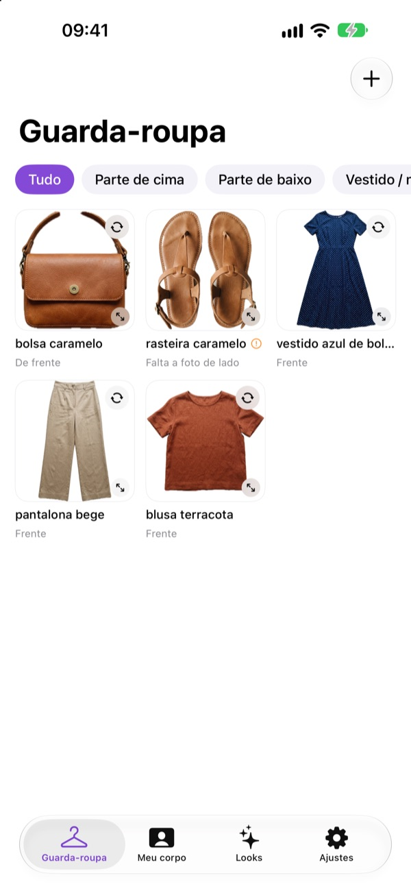
Guarda-roupa
Adicionar uma peça
1Abra a tela Nova peça
Toque em +, no alto à direita. Abre a tela Nova peça.
2Escolha a categoria e o nome
Em Categoria, escolha Parte de cima, Parte de baixo, Vestido / macacão, Calçado, Casaco ou Acessório. A categoria define quais duas fotos o app vai pedir. Em Nome (ex: vestido preto longo), escreva um nome fácil de reconhecer.
3Fotografe a frente
Desça até Frente. Toque em Câmera para fotografar agora, ou em Galeria para usar uma foto que você já tem. Em Como foi fotografada, diga como a peça estava: Estendida, Em manequim, No cabide ou Alguém vestindo.
4Espere o recorte
Espere sumir o aviso Recortando a peça.... O app tira o fundo sozinho e deixa só a roupa.
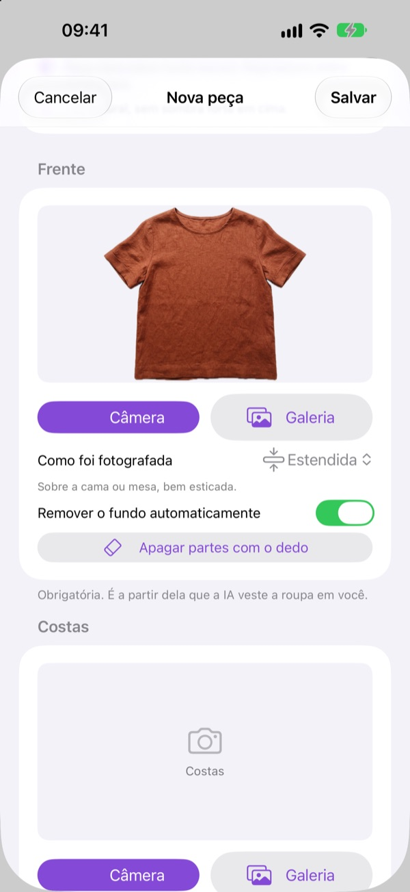
5Faça o mesmo nas costas
Repita tudo na parte Costas. Sem a foto de costas, a IA inventa o que não vê.
Calçado pede De cima, meio de frente e De lado. Acessório pede De frente e De lado ou aberto.
6Confira a cor e a ocasião
Suba até Cor e ocasião. O app já marca a cor que leu na foto. Se estiver errada, toque em outra bolinha.
Ligue Peça estampada se a peça tiver estampa. Em Quando usar, escolha Esportivo, Dia a dia, Trabalho ou Festa. O app usa isso para sugerir looks.
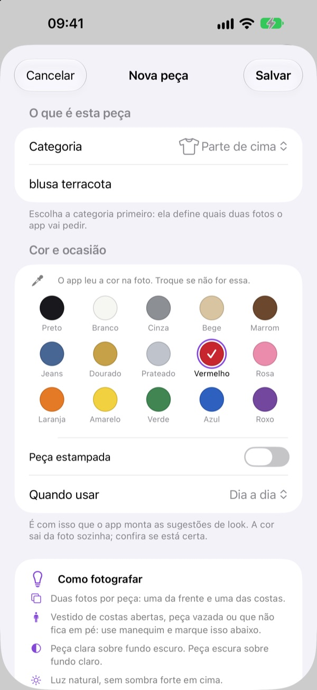
7Salve
Toque em Salvar, no alto à direita. A peça aparece no Guarda-roupa.
Se o recorte não ficou bom
1Fundo parecido com a roupa
Se aparecer um aviso laranja, como "Roupa clara sobre fundo claro", o melhor é refazer a foto sobre um fundo de cor bem diferente da peça.
2O recorte comeu parte da roupa
Desligue Remover o fundo automaticamente. Nas fotos Em manequim e Alguém vestindo, essa chave já começa desligada, porque a IA sabe ignorar o manequim e a pessoa.
3Apague o que sobrou com o dedo
Toque em Apagar partes com o dedo e passe o dedo sobre o que não é roupa: cabide, sombra ou pedaço de manequim.
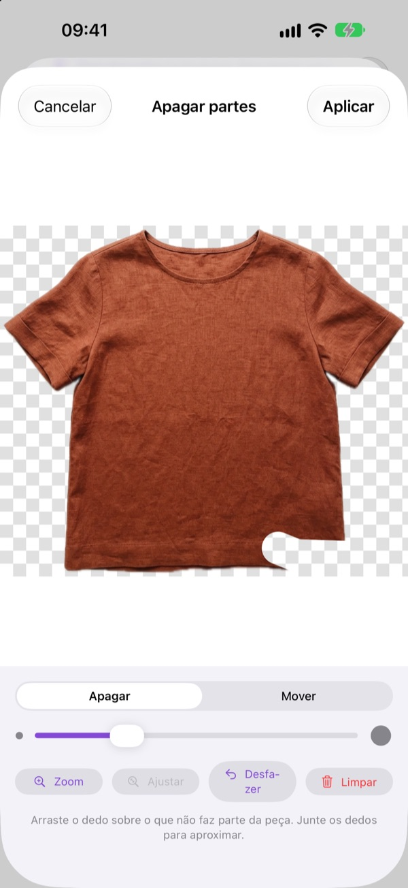
4Use as ferramentas da borracha
A barra deslizante muda a grossura do dedo. Zoom aproxima, Ajustar volta ao tamanho inteiro, Mover arrasta a imagem, Desfazer tira o último risco e Limpar tira todos. Toque em Aplicar para guardar.
Ver e cuidar das peças
1Veja a peça em tela cheia
Toque numa peça. Ela abre em tela cheia, mostrando a frente. Embaixo, Frente e Costas trocam o lado. Junte os dedos para aproximar.
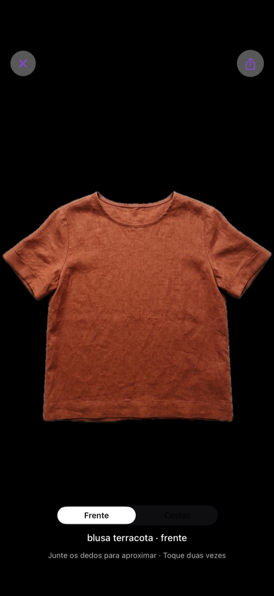
2Vire a peça na grade
O botãozinho de setas em círculo, no canto do cartão, vira a peça ali mesmo.
3Veja o que está faltando
Um ponto de exclamação laranja avisa que falta a segunda foto. Numa blusa aparece "Falta a foto costas". Num calçado, "Falta a foto de lado".
4Abra o menu da peça
Toque e segure a peça. Abre o menu com Editar peça, Corrigir recorte da frente, Corrigir recorte das costas, Favoritar e Apagar.
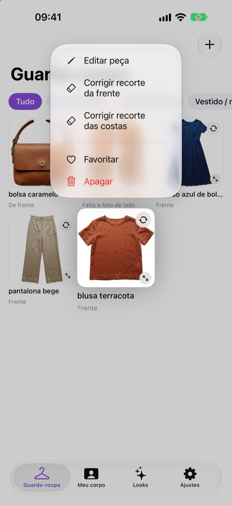
5Edite quando precisar
Em Editar peça você troca as fotos, põe a foto que falta e muda nome, categoria e cor. Ler a cor da foto de novo refaz a leitura da cor. No fim, toque em Salvar.
6Filtre e favorite
Os botões no alto da grade, como Tudo e Parte de cima, mostram uma categoria de cada vez. As peças favoritas aparecem mais nas sugestões.
Meu corpo
As 4 fotos
1Coloque as fotos
A aba mostra 4 quadros: Frente, Costas, Perfil esquerdo e Perfil direito. Toque num quadro, escolha Câmera ou Galeria e toque em Salvar.
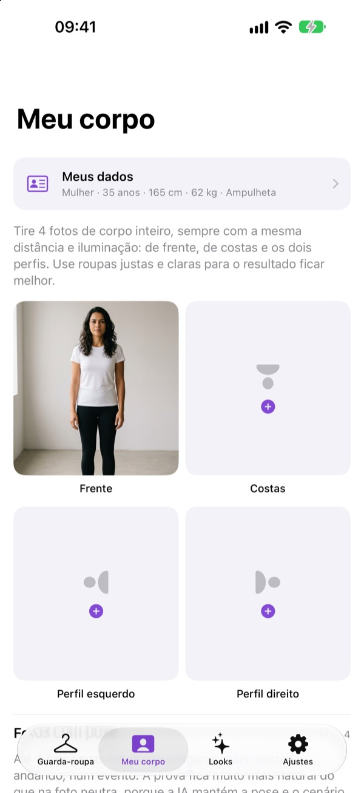
2A foto de frente vem primeiro
A foto de Frente é a mais importante: é a que o provador já deixa escolhida como base. As outras servem para provar de costas e de lado.
3Troque ou tire uma foto
Para trocar, toque no quadro e escolha outra foto. Para tirar, toque em Apagar esta foto.
Qual foto funciona melhor
- Corpo inteiro, da cabeça aos pés, com o rosto bem visível.
- Roupa justa e clara, de pé, em postura natural.
- As 4 fotos com a mesma distância e a mesma luz.
- Peça para alguém tirar. Ou use o temporizador do app Câmera do iPhone e depois escolha a foto em Galeria.
Meus dados
1Preencha as suas medidas
Toque em Meus dados, no alto da aba Meu corpo. Preencha Gênero (escreva como preferir), Idade, Altura (em cm) e Peso (em kg). Nada é obrigatório.
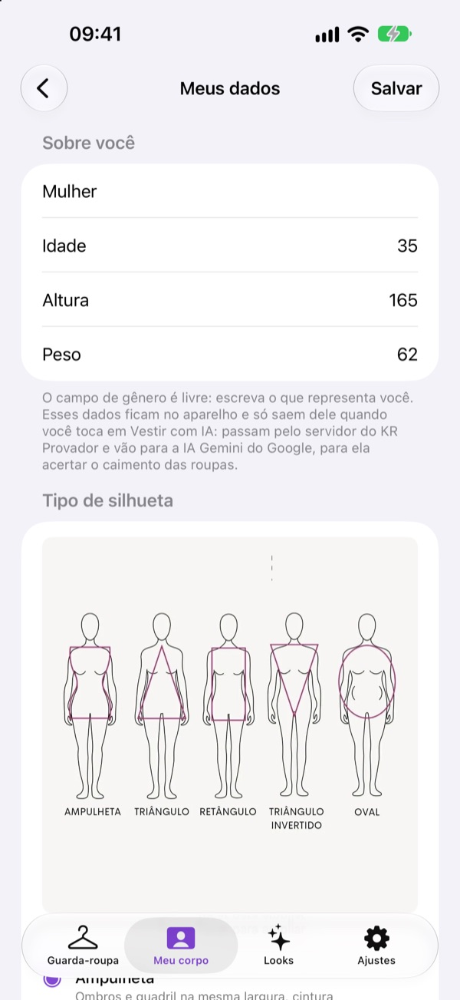
2Escolha a silhueta
Em Tipo de silhueta, toque no desenho para ampliar e marque o mais parecido com você: Ampulheta, Triângulo, Retângulo, Triângulo invertido ou Oval. Na dúvida, deixe Não sei ainda.
3Salve
Toque em Salvar. Esses dados ajudam a IA a respeitar as suas medidas.
Fotos com pose
1Adicione uma pose
Mais abaixo na aba, em Fotos com pose, você guarda até 4 fotos suas em lugares reais: sentada, andando, numa festa. Toque em Adicionar pose e escolha a foto.
2Dê um nome e diga o lado
Escreva um nome, como "Festa". Em Você está virada para, diga se está de Frente, de Costas ou de perfil. Toque em Salvar.
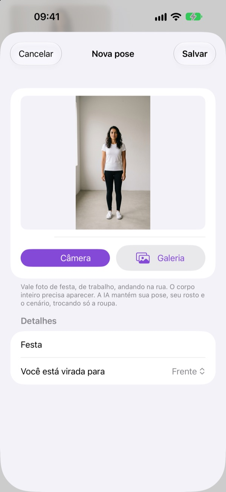
3O que a IA faz com a pose
A IA mantém a sua pose, o seu rosto e o cenário, e troca só a roupa.
Looks
Montar um look
1Abra Montar look
Na aba Looks, toque em +, no alto à direita. Escreva um nome em Nome do look (ex: jantar sexta).
2Escolha as peças
Toque nas peças que quer usar. A escolhida ganha uma borda colorida. Toque de novo para tirar.
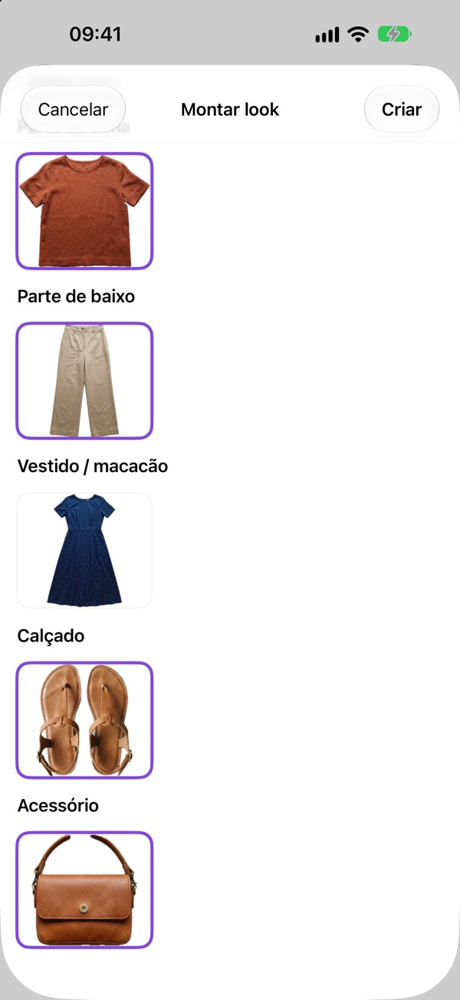
3Crie
Toque em Criar. O look aparece em Meus looks.
Sugestões automáticas
1Peça sugestões
Toque em Sugerir looks automáticos. O app combina as suas peças por cor, estampa e ocasião, e escreve o motivo de cada combinação.
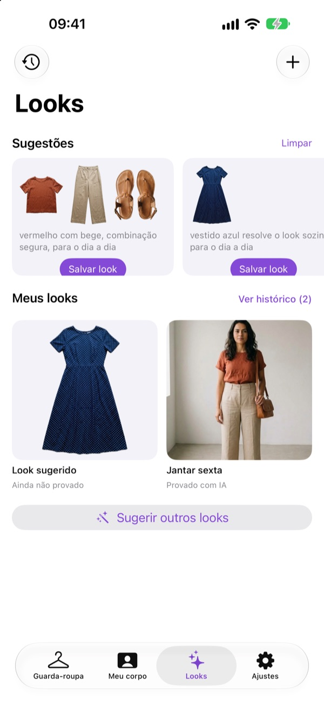
2Guarde a que gostou
Toque em Salvar look. Para ver outras, toque em Sugerir outros looks. Limpar esconde as sugestões.
3Peças que o app precisa
Para sugerir, o app precisa de pelo menos 2 peças no guarda-roupa, com uma parte de cima e uma de baixo, ou um vestido. Se as peças não combinam entre si, o app não sugere nada. Veja em Problemas comuns.
Meus looks e histórico
1Veja os looks recentes
Em Meus looks aparecem os 6 mais recentes, com Ainda não provado ou Provado com IA embaixo. Toque e segure um look para Editar look, Favoritar ou Apagar look.
2Abra o histórico
Toque em Ver histórico, ou no relógio no alto à esquerda. Os looks aparecem por dia. Filtre por Todos, Favoritos ou Provados, ou use a busca Buscar por look ou peça.
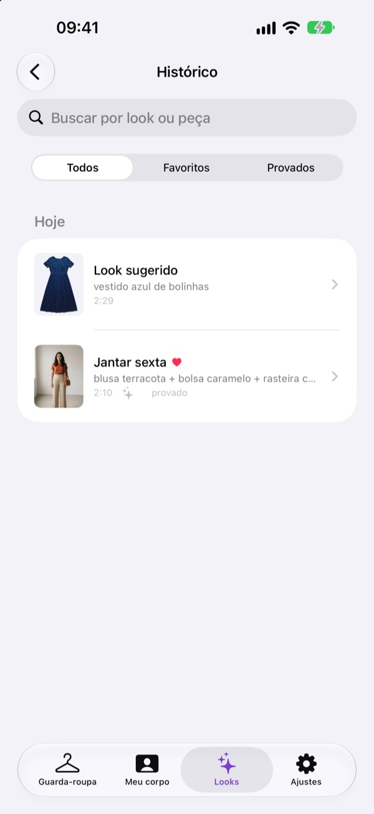
3Deslize para mais opções
No histórico, deslize um look para a esquerda para apagar, ou para a direita para editar e favoritar.
Provador
Abrir e preparar
1Abra o look
Na aba Looks, toque no look. Abre o provador, com o nome do look no alto.
2Escolha a foto base
Em Foto usada como base, toque na foto sobre a qual a IA vai vestir o look. Pode ser um dos ângulos do corpo ou uma foto com pose. A escolhida fica com borda colorida.
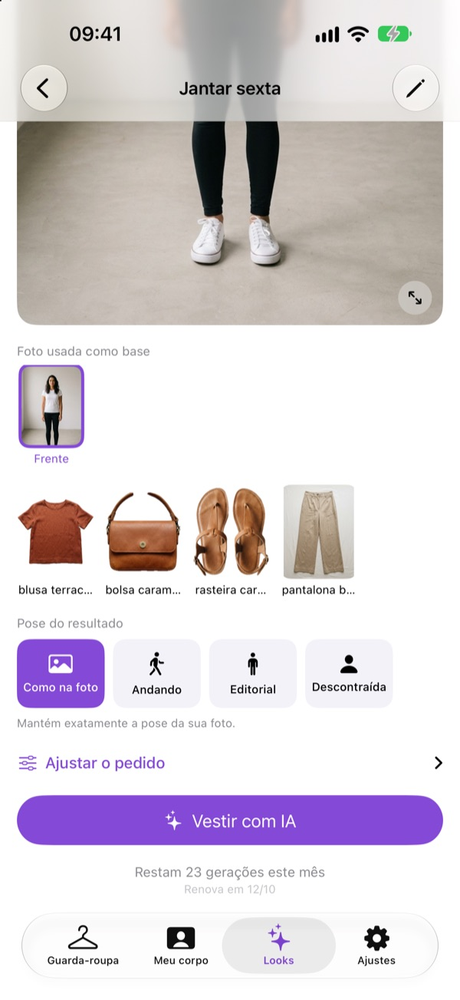
3Confira as peças
Logo abaixo aparecem as peças do look. Para trocar, toque em Editar (o lápis), no alto à direita.
4Escolha a pose
Em Pose do resultado, escolha Como na foto, Andando, Editorial ou Descontraída. Embaixo aparece uma frase que explica cada uma.
Primeira vez: a sua permissão
1Leia o que é enviado
Na primeira vez que você tocar em Vestir com IA, abre a tela Antes de vestir com IA. Ela mostra o que é enviado e para quem. A tela volta sempre que a permissão estiver desligada em Ajustes.
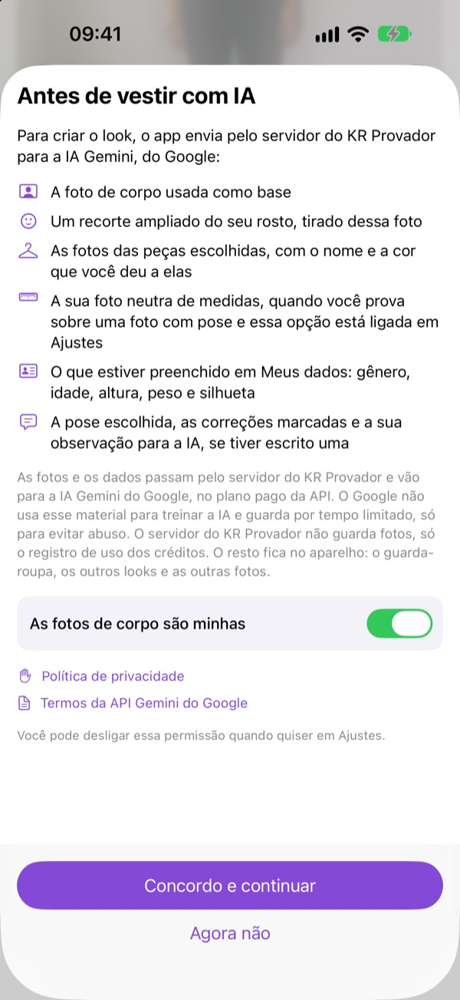
2Dê o seu sim
Ligue As fotos de corpo são minhas e toque em Concordo e continuar. A geração começa sozinha. Agora não fecha a tela sem enviar nada.
Vestir o look
1Toque em Vestir com IA
Aparece "A IA está vestindo você..." e leva de 10 a 40 segundos.
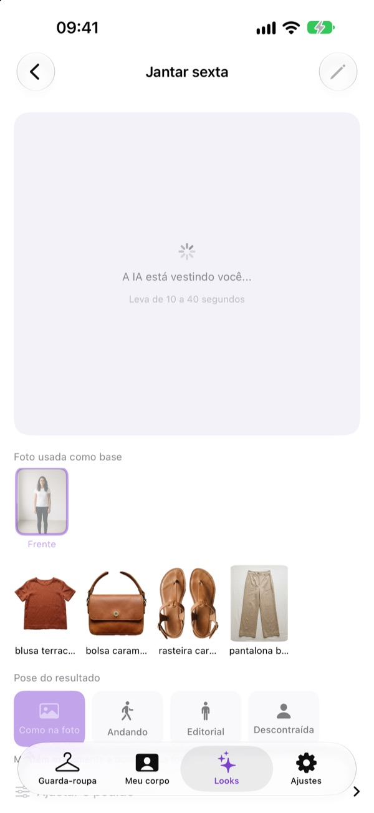
2Confira o saldo
Embaixo do botão fica o seu saldo: quantas gerações ainda restam no mês. Cada geração gasta 1. Se der erro, ela volta para o saldo.
3Veja o resultado
O resultado aparece no quadro grande. Toque nele para ver em tela cheia e junte os dedos para aproximar.
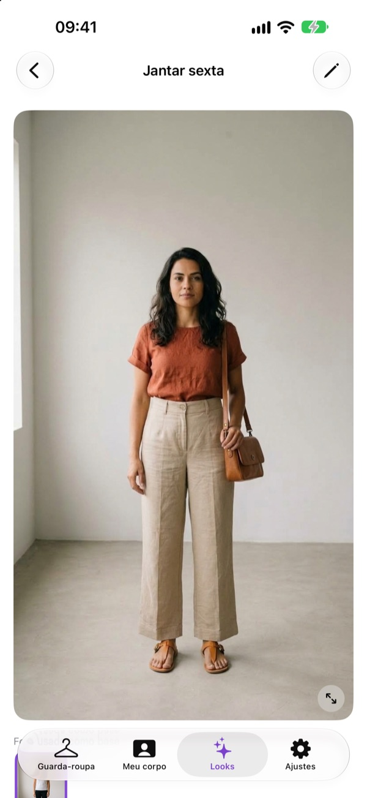
4Não gostou? Gere de novo
Depois do primeiro resultado, o botão vira Gerar de novo. Cada tentativa gasta 1 geração.
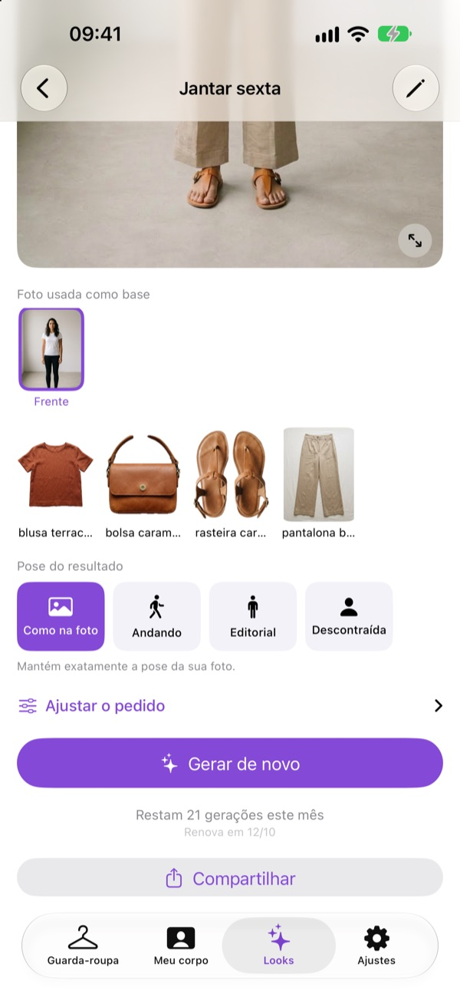
Corrigir o que saiu errado
1Marque o erro
Toque em Ajustar o pedido. Em O que ficou errado na última tentativa?, marque o que saiu errado: Mudou meu rosto, Mudou meu corpo, Apareceu o manequim, Vestiu ao contrário, Trocou o cenário, A peça ficou diferente, Comprimento errado ou Cor errada.
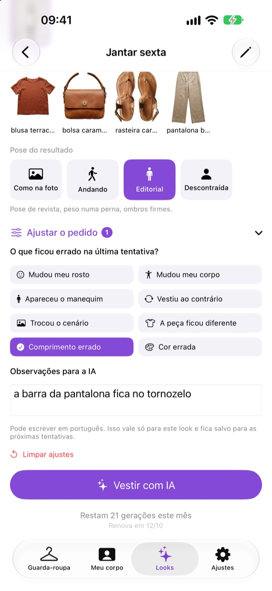
2Escreva para a IA
Em Observações para a IA, escreva em português o que quiser, por exemplo "a barra da pantalona fica no tornozelo".
3Tente de novo
Toque em Gerar de novo. Se você saiu e voltou ao look, o botão aparece como Vestir com IA. As correções ficam guardadas neste look, e Limpar ajustes apaga todas.
Guardar e compartilhar
1Salve ou mande a imagem
Toque em Compartilhar, embaixo do botão. Para guardar no app Fotos, escolha Salvar Imagem. Na primeira vez, o iPhone pede licença para salvar nas Fotos. Aceite, senão a imagem não é salva. Para mandar, escolha WhatsApp, Mensagens ou outro app.
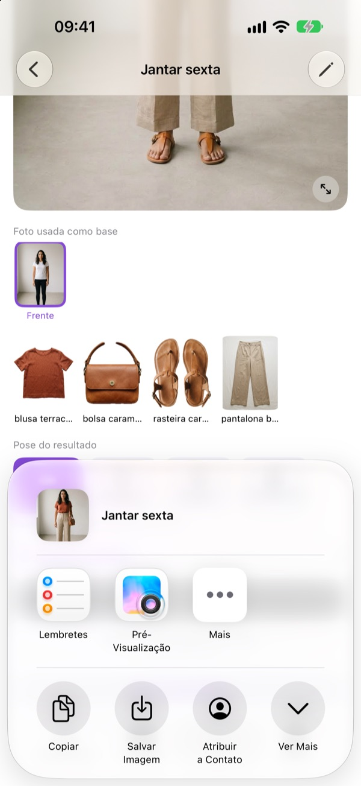
2Compartilhe outro dia
Voltou ao look depois? Toque na imagem e use o botão de compartilhar, no alto à direita da tela cheia.
3Guarde as boas antes de gerar outra
Cada look guarda só o último resultado. Uma geração nova substitui a anterior, e mudar as peças do look apaga o resultado. Salve antes as imagens que quer manter.
Assinatura e créditos
Como funciona
1O que é livre
Guarda-roupa, fotos, looks e sugestões são livres. Só Vestir com IA precisa de assinatura. Sem ela, no lugar do botão aparece Assinar para provar.
225 gerações por mês
A assinatura é anual, com renovação automática, e dá 25 gerações por mês. As que sobram no mês não passam para o mês seguinte.
37 dias grátis
Quem nunca assinou tem 7 dias grátis com 5 gerações, no botão Começar 7 dias grátis. Vale uma vez por conta Apple. Depois dos 7 dias, começa a cobrança anual. Para não pagar, cancele até 24 horas antes do fim dos 7 dias.
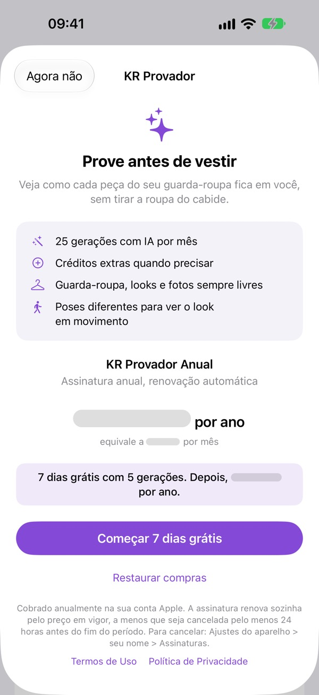
4Assine
Em Ajustes, toque em Assinar. Ou toque em Assinar para provar no provador.
Créditos e conta
1Compre mais gerações
Acabaram as gerações do mês? Em Ajustes, toque em Comprar créditos e escolha um pacote de 10, 50 ou 100. No provador, com o saldo zerado, o botão vira Comprar mais gerações.
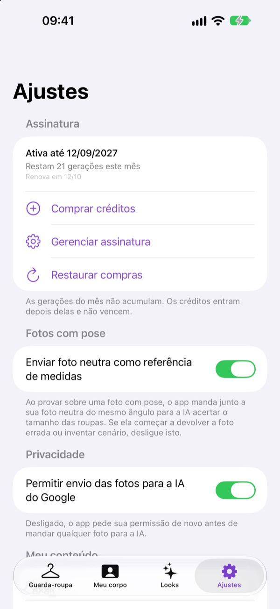
Bom saber sobre créditos
- Créditos são só para quem assina.
- O app usa primeiro as gerações do mês e depois os créditos.
- Crédito comprado não vence.
2Trocou de iPhone?
Em Ajustes, toque em Restaurar compras. Use a mesma conta Apple da compra.
3Mude ou cancele
Em Ajustes, toque em Gerenciar assinatura. Cancele até 24 horas antes da renovação. Fora do app: Ajustes do iPhone, toque no seu nome e depois em Assinaturas.
Backup
Guardar uma cópia do guarda-roupa
1Por que fazer
O guarda-roupa fica só no seu iPhone. Se o app for apagado sem backup, peças, fotos e looks se perdem. A assinatura não se perde.
2Faça o backup
Em Ajustes, toque em Exportar guarda-roupa. Quando aparecer "Arquivo pronto", toque em Enviar o arquivo e escolha Salvar em Arquivos ou AirDrop.
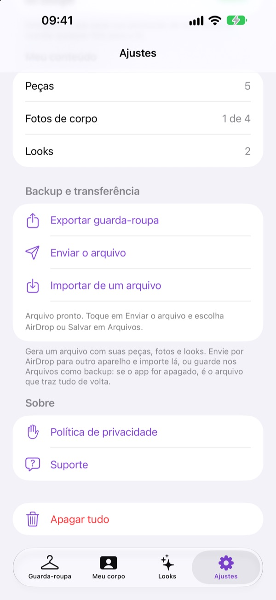
3Traga tudo de volta
Em Ajustes, toque em Importar de um arquivo e escolha o arquivo. Juntar com o que já tenho acrescenta só o que falta. Substituir tudo troca o que está no aparelho pelo que está no arquivo.
4Apagar tudo
Apagar tudo, no fim de Ajustes, remove peças, fotos, looks e Meus dados. A permissão de envio para a IA também é desligada, e o app pede o seu sim de novo. A assinatura e os créditos continuam.
Quando fazer backup
- De vez em quando, depois de cadastrar várias peças.
- Sempre antes de trocar de iPhone.
Dicas para fotos boas
Roupas
- Peça clara sobre fundo escuro. Peça escura sobre fundo claro.
- Luz natural, sem sombra forte em cima.
- Fundo liso: lençol, chão ou parede.
- Peça bem esticada e inteira na foto, sem cortar manga nem barra.
- Sempre as duas fotos: frente e costas.
- Costas abertas, peça vazada ou que não fica em pé: use manequim e marque Em manequim.
- Calçado: o par junto, de cima e meio de frente. Depois um pé de perfil, que mostra a altura do salto.
- Confira a cor marcada. É ela que guia as sugestões.
Corpo
- Corpo inteiro, da cabeça aos pés, com o rosto visível e bem iluminado.
- Roupa justa e clara, fundo simples.
- As 4 fotos com a mesma distância e a mesma luz.
- Nas fotos com pose, o corpo inteiro precisa aparecer. Marque certo para que lado você está virada.
Problemas comuns
Por que o botão Vestir com IA está cinza?
Falta a foto base ou o look está sem peças. Coloque a foto de Frente em Meu corpo, ou toque em Editar no provador e escolha as peças.
Apareceu "Falta sua foto de corpo". E agora?
Na aba Meu corpo, coloque pelo menos a foto de Frente.
O recorte ficou ruim ou comeu a roupa. O que faço?
Refaça a foto com um fundo de cor contrária à da peça. Ou desligue Remover o fundo automaticamente, ou use Apagar partes com o dedo.
Como arrumo o recorte de uma peça já salva?
Toque e segure a peça e escolha Corrigir recorte da frente ou Corrigir recorte das costas.
Apareceu manequim ou cabide no resultado. Como tiro?
Em Ajustar o pedido, marque Apareceu o manequim e gere de novo. Confira também se a peça está marcada como Em manequim ou No cabide, conforme a foto.
A IA mudou meu rosto ou meu corpo. O que faço?
Preencha Meus dados. Em Ajustar o pedido, marque Mudou meu rosto ou Mudou meu corpo. Use uma foto com o rosto bem iluminado.
Por que a roupa saiu ao contrário?
Cadastre a foto de costas da peça e marque Vestiu ao contrário. Numa foto com pose, confira Você está virada para.
A IA mudou o cenário da minha foto com pose. Como evito?
Marque Trocou o cenário. Se continuar, em Ajustes, desligue Enviar foto neutra como referência de medidas.
Apareceu "Muitas gerações em pouco tempo". O que é isso?
Há um limite por hora. Espere alguns minutos e tente de novo.
Deu erro com "A geração não foi descontada". Perdi a geração?
Não. Toque no botão de novo para tentar outra vez. Se o erro se repetir, mande a mensagem para o suporte, com a hora em que aconteceu.
Apareceu "Não consegui confirmar sua assinatura". O que faço?
Em Ajustes, toque em Restaurar compras.
Por que Sugerir looks automáticos não sugere nada?
Com menos de 2 peças no guarda-roupa, o botão fica cinza. Com 2 ou mais, o app precisa de uma parte de cima e uma de baixo que combinem, ou de um vestido. Se as peças não combinam entre si (duas estampas, duas cores fortes ou ocasiões muito diferentes, como Esportivo e Trabalho), o app não sugere nada. Cadastre mais peças, de preferência em cores neutras, ou confira Quando usar em cada peça.
Por que o + da aba Looks está cinza?
Cadastre pelo menos uma peça no Guarda-roupa.
Sumiu o resultado anterior. Dá para recuperar?
Não. Cada geração nova substitui a anterior. Guarde as boas com Compartilhar e Salvar Imagem.
Troquei de iPhone. Como levo tudo?
No iPhone antigo, use Exportar guarda-roupa. No novo, use Importar de um arquivo e depois Restaurar compras.
O app funciona sem internet?
Quase tudo, sim. Só Vestir com IA e as compras precisam de internet.
Privacidade, em resumo
- Suas fotos, peças e looks ficam no seu iPhone.
- Só quando você toca em Vestir com IA, e depois de aceitar o aviso, vão para a IA Gemini, do Google, passando pelo servidor do KR Provador: a foto base, um recorte do rosto, as peças com nome e cor, Meus dados, a pose, as correções e a sua observação. Com foto com pose, vai também a foto neutra de medidas, se essa opção estiver ligada. O Google não usa isso para treinar a IA e guarda por até 55 dias só para evitar abuso. O servidor não guarda fotos.
- Você pode desligar o envio em Ajustes, na chave Permitir envio das fotos para a IA do Google.
Os detalhes estão na Política de Privacidade.
Contato
Ainda com dúvida? Escreva para krprovador@gmail.com. Diga qual iPhone você usa e o que aconteceu.
Veja também a página de Suporte e a Política de Privacidade. Dentro do app, elas ficam em Ajustes, na parte Sobre.